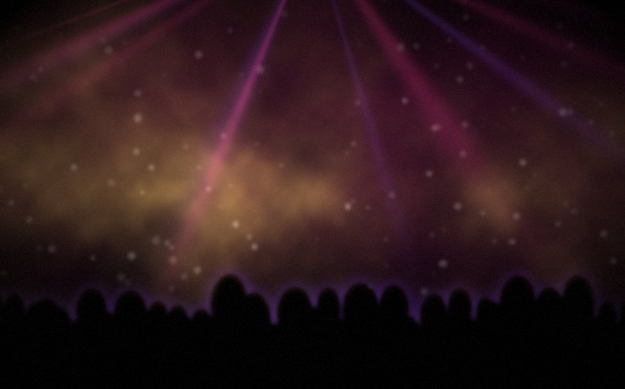
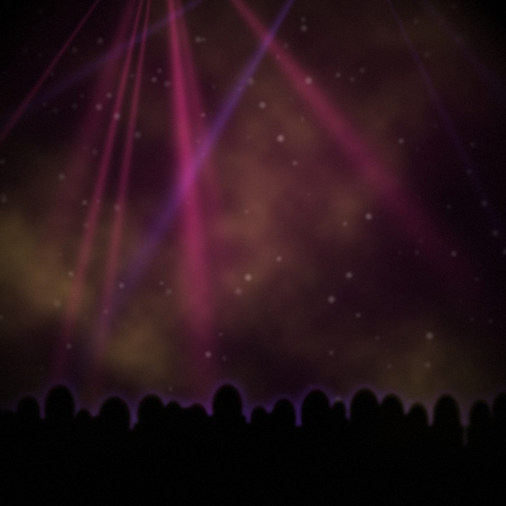
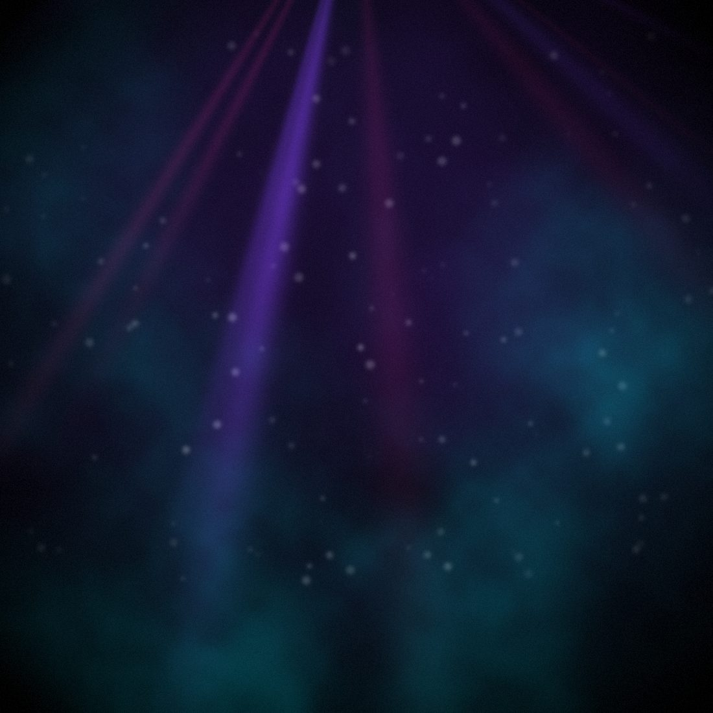
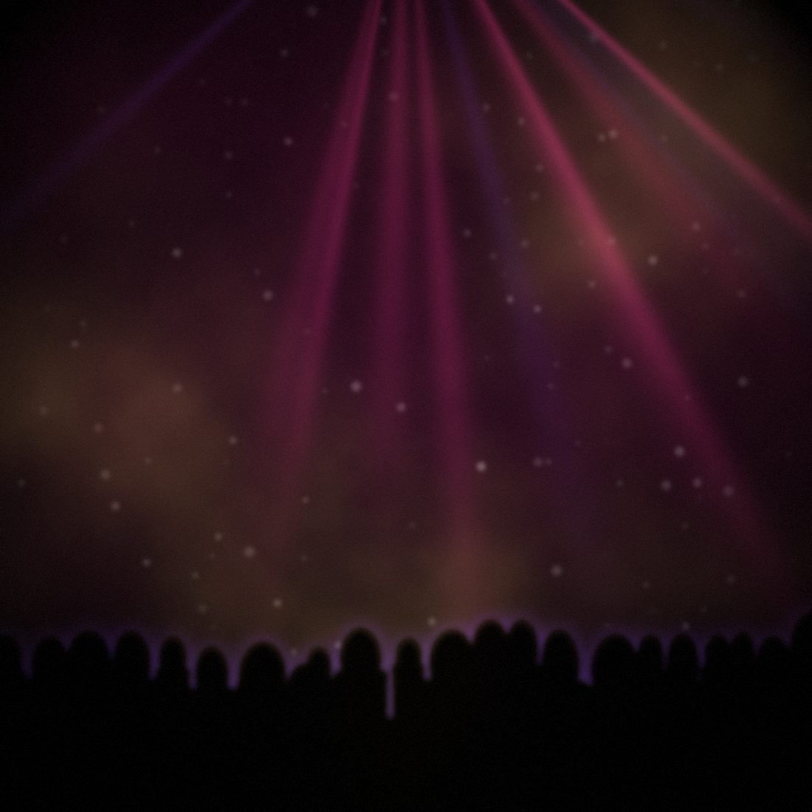
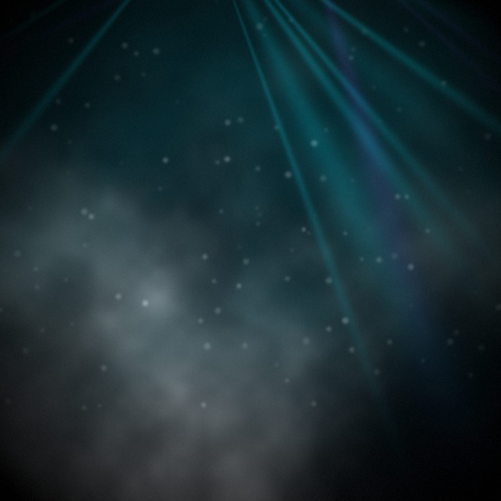

News & media
Blog, video
e fotografie
Novità musicali, uscite, racconti dalla pista e materiale dalle serate.
Articoli
Dal blog

La cumbia: la rivoluzione nelle sale da ballo
Come un ritmo latinoamericano è diventato il genere che riempie le piste dei dancing italiani.
Le nuove produzioni
Remix, cumbie e originali: l'archivio completo delle uscite, dal 2015 a oggi.
Radio Jamaica: la storia
Dieci anni di riconoscimenti, il Gran Premio della Radio e il primo posto in Toscana.
Video
Dal canale
Foto
Dalle serate
FOTO 01
FOTO 02

FOTO 03
FOTO 04

FOTO 05

FOTO 06
FOTO 07

FOTO 08
Seguimi